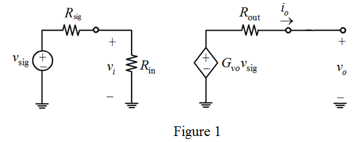
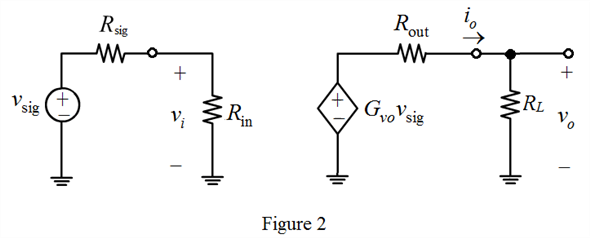

Apply voltage division rule at the input side to calculate the expression for  .
.
The expression for open circuit voltage gain,  is,
is,
Refer to Figure P5.83 in the textbook.
Draw the equivalent circuit after open circuiting the output terminal ().

Apply voltage division rule at the input side to calculate the expression for .
The expression for open circuit voltage gain, is,
Consider the expression for open circuit overall gain.
Substitute for  .
.
Substitute for  .
.
Thus, the expression for open circuit overall gain is proved.
Redraw the circuit to calculate the overall voltage gain.

Apply voltage division rule at the output side to calculate the expression for  .
.
Thus, the expression for overall voltage gain is proved.